-
 This is an image title
This is an image title
Lorem pellentesque habitant morbi tristique.
Estibulum erat wisi, condimentum, commodo
ornare sit wisi. Aenean fermentum, elit eget
tinciduntcondimentum.Vestibulum erat wisi
condimentum sed, commodo vitae, ornare
sit amet, wisi. Aenean fermentum, elit eget
tincidunt condimentum. -
 This is an image title
This is an image title
Lorem pellentesque habitant morbi tristique.
Estibulum erat wisi, condimentum, commodo
ornare sit wisi. Aenean fermentum, elit eget
tinciduntcondimentum.Vestibulum erat wisi
condimentum sed, commodo vitae, ornare
sit amet, wisi. Aenean fermentum, elit eget
tincidunt condimentum. -
 This is an image title
This is an image title
Lorem pellentesque habitant morbi tristique.
Estibulum erat wisi, condimentum, commodo
ornare sit wisi. Aenean fermentum, elit eget
tinciduntcondimentum.Vestibulum erat wisi
condimentum sed, commodo vitae, ornare
sit amet, wisi. Aenean fermentum, elit eget
tincidunt condimentum. -
 This is an image title
This is an image title
Lorem pellentesque habitant morbi tristique.
Estibulum erat wisi, condimentum, commodo
ornare sit wisi. Aenean fermentum, elit eget
tinciduntcondimentum.Vestibulum erat wisi
condimentum sed, commodo vitae, ornare
sit amet, wisi. Aenean fermentum, elit eget
tincidunt condimentum.
The Andover Community
June 17, 2022
LINDSEY SCHUST & THE RAGGED MT. BAND
(Opening act: Michelle Sanborn)
The music will begin at 6PM in the AEMS outside amphitheater located
between the school and bank parking lots.
More details below
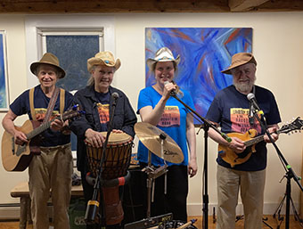
LINDSEY SCHUST & THE RAGGED MT. BAND
Lindsey Schust & the Ragged Mt. Band formed in 2011, when they debuted her local hit "Hippie Hill" at the Andover Historical Society Old Time Fair Auction. Now, the group performs throughout in the NH Lakes Region area. They are working on their new single "Country Way" and the accompanying video to come out in September. The band plays original songs written by Lindsey and arranged for the group. They also cover a mixture of traditional Americana, folk, country western, bluegrass and folk rock. The band is made up of friends and family members, all currently living in Andover, NH.
NH based singer-songwriter, pianist & percussionist, Lindsey Schust, along with her group “the Ragged Mountain Band”, will kick off the Andover Coffeehouse’s outdoor music series. The band performs a mix of country, folk, acoustic rock and original songs. They will also play a set of traditional and new train songs, including Wabash Cannonball, Slow Train (by Grace Schust) and Parallel Lines (L. Schust). Performing alongside Lindsey will be Andover musicians Paul Currier (mandolin, dobro, fiddle and vocals), Grace Schust (drums and vocals), and Jim Schust (guitar).
Lindsey decided to get albums manufactured for concert goers this summer following her on-line release of single “Parallel Lines”. Fans will get the chance to pick up the album (with high fidelity sound), before it hits the on-line streaming air waves at the end of the summer. The 2022 album, called Country Way features her popular songs “Sugar Shock”, “Hippie Hill”, “Probably Shouldn’t-a”, “God’s Hotel”, “Parallel Lines”, and title track “Country Way”. Studio musicians include Paul Currier, Robert Grasmere, Jim Schust, Grace Schust, Jim Connell, Jimmy Sferes, and Jordan Tirrell-Wysocki. To get a preview, stream Lindsey’s single “Parallel Lines” on-line or visit her YouTube channel “Lindsey Schust Music” to watch the “Parallel Lines Music Video”.
“Lindsey’s music takes me to a different place. It’s very happy there!” Maureen Simpson, NH
For more information visit: www.lindseyschustmusic.com or contact contact Susan Chase.
Lindsey Schust- songwriter, arranger, bandleader, keyboards and
vocals
Grace Schust- drums and vocals
Jim Schust- Guitar
Paul Currier- Dobro, fiddle, mandolin, and vocals
Jim Connell- Bass, guitar and vocals
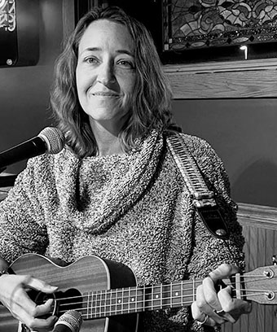
Michelle Sanborn
Michelle Sanborn is a self-taught singer-songwriter and performer of an eclectic variety of music styles including contemporary folk, country, and soft rock. She accompanies herself with a warm-sounding baritone ukulele and has been sharing her passion for singing at open mics, farmer's markets, and charity events around the Lakes Region. Come enjoy her whimsical music style that will be sure to please your ears and touch your heart!
Outdoor concert at the outdoor Amphitheater in Andover, N.H. Located beside Andover Town Hall, Routes 4 and 11.
Music will begin at 6 p.m.
light supper food items will be available for sale, prepared by the folks from the Andover Community Church, well-known for the food they sell at regular Coffeehouse performances.
Attendees should bring their own chairs or blankets or plan to sit on the grass.
The event is open to the public at no charge, although the traditional Coffeehouse hardhat will be passed for donations for the band.
Parking is available behind the Town Offices Building.
The concert will be cancelled in the event of rain. For last-minute information, call 603-735-5135, text 603-724-4670 or email TheAndoverHub@gmail.com.
September 17, 2021
Cosy Sheridan
LIVE Outdoors
6:00 PM at the Andover Ampitheater at AEMS
The venue is located behind Andover Town Hall
(between Hamp House and the skateboard park).
20 School Street - Andover, NH 03216
The event will take place in the grassy outdoor amphitheater located between the school and the bank parking lots in Andover.
The concert will begin at 6 PM, and food (grinders, wraps, desserts) will be available for purchase. Bring your own chairs or blankets. The event is open to the public at no charge; donations to be shared with the featured performer are gratefully accepted. If weather threatens, the event will be canceled. Contact 735-5135 with questions.
In addition to the featured performer's set, local musicians interested in performing a song or two as part of the "open mic" portion of the show are welcome to contact TheAndoverHub@gmail.com to sign up for one of several slots, on a first come, first served basis.
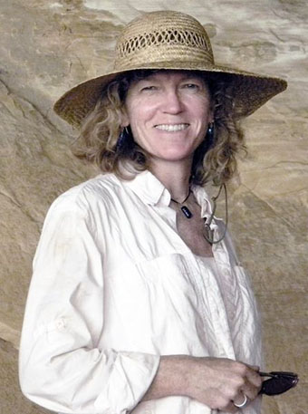
Cosy Sheridan first appeared on the national folk scene in 1992 when she won the songwriting contests at The Kerrville Folk Festival and The Telluride Bluegrass Festival. The Boston Globe wrote: ”she is now being called one of the best new singer/songwriters”.
She has been on the road ever since, playing clubs, concert halls, and coffeehouses across the country. “You can't make it into double digits, and continue touring for twenty or so years, unless you know what you're doing, and do it well,” said The Chicago Examiner.
She continues to be one of the most prolific songwriters in the folk scene. My Fence & My Neighbor was number four on the folk radio charts in 2018. Pretty Bird was listed in Sing Out Magazine’s Great CDs of 2014.
She was a voice student at Berklee College of Music, and a guitar student of legendary fingerstyle players Eric Schoenberg and Guy Van Duser. She has played at Carnegie Hall, The Cowgirl Hall of Fame, and on the Jerry Lewis Telethon.
Backed by the strong rhythms and harmonies of her bass player Charlie Koch, she plays a percussive bluesy guitar style, often in open tunings and occasionally with two capos on the guitar neck.
Our previously scheduled performer had to cancel. Many thanks to Cosy Sheridan for filling in on short notice.
Our Sponsor:
Naughty Nellie's Ice Cream Bar
May 21, 2021
Coq au Vin
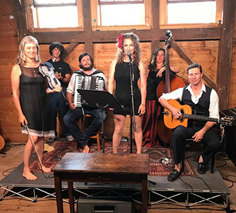
Though the popular band "Coq au Vin" rarely leaves Nantucket Island, they'll join local music- lovers virtually on Zoom.
The band's tagline is "A spicy melange of global sounds, homegrown on Nantucket Island." Since its launching last spring, it's become the most sought-after show on the island. According to Nantucket Magazine, "Coq au Vin has taken Nantucket by storm with an eclectic repertoire that includes everything from Django-style gypsy jazz, Eastern European and Russian folk music to French chansons, Cuban songs, American blues — and a little bit of pop."
April 16, 2021
Green Heron

The music of Green Heron stretches across the entire folk landscape. Old-time, folk, bluegrass, country, Irish and blues music are all represented as the band brings the back porch to the stage. Featuring Betsy Heron on fiddle, banjo and vocals, and Scott Heron on guitar, banjo and vocals, the duo has been sharing stages together since 2016. With two albums to their name, the two songwriters weave the contemporary with the traditional and deliver high energy live performances.
"If there was ever a recipe for treating the 'pandemic blues,' it's listening to the music of Green Heron. Multi-instrumentalists Betsy and Scott Heron … offer a comforting musical stew, featuring ingredients ranging from bluegrass to folk to vintage country. Their pairing of string instruments with beautiful vocal harmonies is uplifting and joyful."
— New Hampshire Magazine
March 19, 2021
The Ferns Family
On Friday, March 19, The Andover Community Coffeehouse will return to monthly performances, with The Ferns Family Band of Wilmot as featured performers...... The Ferns appeared last spring as open mic performers during a Zoom Coffeehouse and consist of Justin Ferren on guitar, his son Quinlan on the keyboard and his daughter Mara as lead singer.
June 19, 2020
Virtual Coffeehouse Featuring Old Horse
Our Coffeehouse will be held
online on Zoom
We'll start promptly at 7 p.m. and we hope you'll join us from the comfort of your own living room.
If you'd like to be part of the audience, please let us know by sending an email to theandoverhub@gmail.com. We'll then send you a link to the Zoom gathering on Friday, along with a few instructions for those who haven't used Zoom before — it's pretty easy! You may also send an email if you'd like to be considered for an open mic slot.
Hope you'll plan to join us for some good music!
Old Horse
Jason Eslick grew up in Andover, in a musical family. His parents, Susan and Tom both taught at Proctor Academy. His dad Tom was a published writer, English teacher, singer-songwriter and master travis picker on the guitar. Following in his dad's footsteps, Jason also teaches English and writes music and performs with his family band. He has published several albums of his own songs which are available online. Most recently he put out a single called "Colorado Moon", which is a local favorite in Andover, covered by Lindsey Schust & the Ragged Mt Band. The single and other music by Jason can be heard on YouTube, Amazon Music, Spotify and other music steaming services.
Jason's band "Old Horse" is an acoustic folk duo based out of Massachusetts, comprised of Jason and his wife Sarah Eslick.
May 15, 2020
Virtual Coffeehouse Featuring Kala Farnham
Our Coffeehouse will be held
online on Zoom
We'll start promptly at 7 p.m. and we hope you'll join us from the comfort of your own living room.
If you'd like to be part of the audience, please let us know by sending an email to theandoverhub@gmail.com. We'll then send you a link to the Zoom gathering on Friday, along with a few instructions for those who haven't used Zoom before — it's pretty easy! You may also send an email if you'd like to be considered for an open mic slot.
Hope you'll plan to join us for some good music!
Kala Farnham
Armed with a voice, entourage of instruments, and faith in the power of story, songstress Kala Farnham set out into the world with one vision: To inspire through the transformative power of musical storytelling. Farnham has garnered numerous awards and recognition, including 2019 Rose Garden Performing Songwriter Contest winner and alumni of the Johnny Mercer Songwriters Project. Farnham's recent album, a heartfelt account of adventure and homecoming titled "Samadhi: Home Is Where You Are", was nominated for RI's Motif Music Awards "Best Americana Album", and hailed by Bill Copeland Music News as "soulful Americana" in "one of New England's best voices in one of this year's best written and best recorded works". Drawing from a classical education and professional career in musical theater, Kala presents hallmark reinvention of the folk tradition; Her passion for fairytales, ancient history, and vivid storytelling draws her audience into imaginative re-creations of the familiar world.
April 17, 2020
Our first ever Virtual Coffeehouse
April's Coffeehouse will be held
online
on Zoom
You're probably wishing you could attend the Andover Community Coffeehouse at the Highland Lake Grange Hall. Well, we've got the next best thing — an on-line Coffeehouse with Andover's own Sferes & White doing a half-hour set and a handful of other musicians playing a song or two!
We'll start promptly at 7 p.m. and we hope you'll join us from the comfort of your own living room.
If you'd like to be part of the audience, please let us know by sending an email to theandoverhub@gmail.com. We'll then send you a link to the Zoom gathering on Friday, along with a few instructions for those who haven't used Zoom before — it's pretty easy!
Hope you'll plan to join us for some good local music!
April 17, 2020
Ethan Robbins
Ethan Robbins is the guitarist/songwriter of Americana band, Cold Chocolate, a genre-bending Americana band that fuses folk, funk, and bluegrass to create unique a sound all their own. Ethan began his bluegrass career at Oberlin College where he began to explore how this hard-driving fast-paced genre could be stretched. A classical violinist from age four, Ethan fell in love with the guitar when he turned fourteen and his father bought him five quintessential albums: The Band's “Music from Big Pink,” Bob Dylan's “Bringing it all Back Home,” John Hartford's “Steam Powered Aereo-plane,” Hank Williams “Live at the Grand Ole Opry,” and the Grateful Dead's “Workingman’s Dead.” Ever since, Ethan has attempted to bring those raw, rootsy sounds into his own original material.His band, Cold Chocolate, has established itself as a force in the Americana genre. Ethan and his band have shared bills with Leftover Salmon and David Grisman, and regularly perform at venues and music festivals up and down the East Coast.
March 20, 2020
The March 2020 Coffeehouse Has Been Cancelled
The coordinators have cancelled the Andover Coffeehouse for March 2020. The feature performer, Dan Weber had to cancel his tour due to numerous venue cancellations. Since the Coronavirus situation is changing rapidly, the Andover Coffeehouse has decided not to hold the monthly coffeehouse in March 2020. We are very sorry to miss seeing you all at this month's coffeehouse. We know how important music and community is to you. Remember to reach out by phone to friends that you would have seen at the coffeehouse. We look forward to resuming coffeehouse events soon. Please visit our website or Facebook page for updated information about future events. Thank you for supporting the Andover Coffeehouse
Please watch this site for announcements concerning future shows.
March 20, 2020
Dan Weber
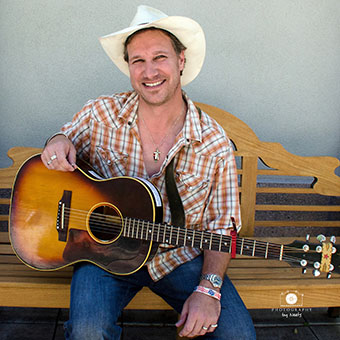
Award Winning songwriter Dan Weber has been described as “The Classic Mid-Life Overnight Sensation” after bursting onto the festival scene in 2010 to a standing ovation at the Sisters Folk Festival for his engaging set in the Dave Carter songwriting contest. Since then he's toured extensively across the country becoming a rare 3 time finalist in the legendary Kerrville 'New Folk' competition, had 2 top finishes in the Woody Guthrie songwriting contest and in 2015 won the prestigious Winfield, Kansas 'NewSong' contest for Oh Woody, his anthemic tribute to Woody Guthrie, that rose to #2 on the Folk charts in 2015.
An ex-Park Ranger, former Eagle Scout, Altar boy and lifelong 'Deadhead', Weber began performing later in life at age 40 but being a gifted storyteller he quickly won over audiences with his natural charisma, upbeat performances, authentic songwriting, and off-the-cuff hilarious stories from the many roads he's traveled. None other than legendary Folk troubadour Ramblin' Jack Elliott said “I love Dan's songs and he tells really good stories.”
Originally from New York and now living in Vancouver, WA, Weber's songs have been described as “Guthrieesque and reminiscent of early John Prine” and “A rare combination of wit, emotion and Harry Chapin-esque imagery.” The UK's Maverick Magazine said: “4 Stars: The touch of a true Master Craftsman songwriter” and The Victory Review wrote “Weber's writing is as strong as any in the Contemporary Folk community.”
After the success of 2015's release of What I'm Lookin' For, a 14 song CD of classic Folk and Americana that climbed to #6 on the charts and included Oh Woody as well as the breakout hit (I Deal with) Crazy ALL Day, an everyman's anthem and crowd sing-a-long favorite, Weber is currently working on his first live recording and new material for an upcoming CD. If his phenomenal growth in such a short period of time is any indication, it promises to be his best work yet.
February 21, 2020
Louise Grasmere
With the release of her eagerly-awaited 2nd indie-cd, Blue Ain't Only Blue, local jazz and blues legend Louise Grasmere has hit her stride with a breakout album that will force fans of "Boston's best-kept vocal secret" to share their beloved blond powerhouse with a much wider audience.
Grasmere's sound is wholly her own – a unique fusion of jazz-influenced rhythm and blues seasoned with motown, gospel and soul. Think Bonnie Raitt laced with the smooth landscapes of Joni Mitchell, the imaginative improvisations of Ella Fitzgerald, and the gritty authenticity of Big Mama Thornton. Louise's sound is compelling, haunting at times, angry, powerful, full of love and passion and always deeply real. Performing in and around Boston in self-produced, sold-out concerts for the last fourteen years, Grasmere has built a huge and devoted grassroots following that has taken on a life of its own. Without major label backing or commercial promotion, her popularity with her fans has fueled Grasmere's ability to consistently perform for packed houses. Blue Ain't Only Blue is a listening journey in rhythm and blues with Grasmere's signature deep, rich and tremendously soulful sound. Tracks range from jazz-tinged funk, to hard-hitting blues, passionate soul, rootsy gospel, and sweet soulful folk rock ballads. This recording also marks Grasmere's emergence as a songwriter. Six of her own works appear on the album, one written in collaboration with co-producer and guitarist Kevin Barry (Mary Chapin Carpenter, Paula Cole, Lori McKenna), and one with pianist and composer Consuelo Candelaria. Grasmere completed Blue Ain't Only Blue on her 48th birthday – a milestone long after most singers can expect to find success in the youth-oriented music industry. But Grasmere turns her age into her greatest asset, with songs rich in hard-earned wisdom. Grasmere's powerful original tunes embrace universal themes of love and loss, and the “in-between” places in life's journey . "It's simpler to think of experiences as good or bad;" Louise says, "but the richness is in seeing that both exist simultaneously. It can take some time to reconcile yourself to the complexities of the middle ground." "We think that youth is a time of freedom" says Louise, "but I am freer now than I ever was in my younger years. I am more willing to take risks and I am far less self-conscious than I was when I was teens, or 20's. For me the past years have been a process of peeling away the layers to an authentic self." Grasmere's song Sometimes You Bust Out Later On is a midlife blues anthem sure to resonate with listeners of all ages. When she sings "I hit a few bumps…so I changed direction...took a U-turn and I came around, there ain't a damn thing left that'll slow me down" – she compels you to believe her and to embrace the promise of the next bend in the road. "Bust Out is a declaration to the world, that no matter what obstacles you have to overcome, you simply must pursue your dreams." "Many years ago my teacher and friend Babatunde Olatunji said that the greatest tragedy of a life is to die with your music in you. That haunted me for years as I struggled to cast off my preconceived notions of what my life and my music were supposed to be. I found the freedom to write only after years of singing other people's music. I am always inspired when I hear about people who hit their creative stride in the years well after their youth. I've been working all my life to find my way to this music."
January 17, 2020
Kat & Brad
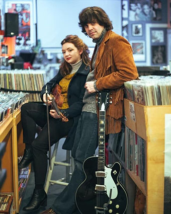
Drawing from 50s and 60s pop, American Songbook standards, and much more, this happy duo channels and fuses these influences through two voices, a guitar, mandolin, and violin to bring you a mixture of original songs and dusted off covers from the past.
The two consist of Brad Bensko on Vocals and Guitar, and Kathleen Parks (of the 2018 Boston Music Award winning Twisted Pine) on Vocals, Violin, and Mandolin.
While busy with performing and writing - they recently recorded, produced, mixed, and released their first LP of original material in March of 2019.
December 20, 2019
Steve Schuch
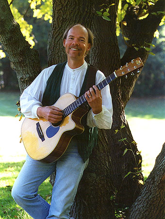
Classically trained on violin, Steve is also an accomplished singer/songwriter, guitarist, author and storyteller. Honors include composer awards, Artist Fellowship Awards, and five fiddling championships. His recordings with The Night Heron Consort are national best-sellers. Beyond his solo work, he also appears with various guest musicians, symphony orchestras, and fellow storyteller, Odds Bodkin.
Steve and his music have embraced both the classical and folk realms. Haunting violin and whale calls... music and tales of Ireland... a pizzicato interpretation of a Picasso painting... these are just part of Steve's wide-ranging repertoire. Many of his pieces have been featured on National Public Radio and PBS.
November 15, 2019
Gary Cassidy
Our previously scheduled featured performers have become unavailable tonight for our show.
Gary Cassidy, who is a fine performer in his own right, will perform the opening set.
But this night will also be a great opportunity for open mic performers. Please come and be welcome.
October 18, 2019
Steven Chagnon
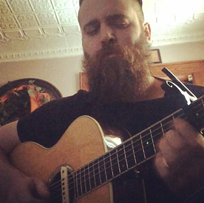
Steven Chagnon is a singer/songwriter, producer, audio engineer, and multi-instrumentalist based out of southern New Hampshire
Tonight's Sponsor:
Patty Pond, the bluebird baker Therapy
September 20, 2019
Oliver The Crow
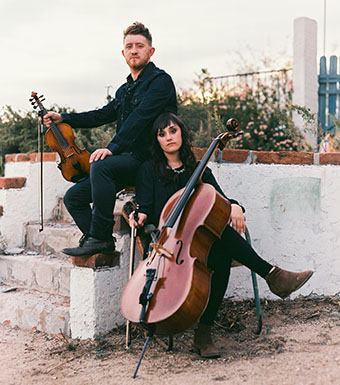
"Within a week of meeting each other, we began mapping musical ideas and plans to record an EP," cellist Kaitlyn Raitz says of her first encounter with fiddler Ben Plotnick, before they even lived in the same city.
The term mapping is spot on. Each of the ten original songs on Kaitlyn and Ben's first full-length offering unlocks a different musical world. Oliver the Crow navigates effortlessly between the gravitas of chamber composition, the longing of folk music, the near dreamlike quality of atmospheric sound art, and above all, pop music's candy-sweet escape. It's no wonder NPR Music has named their duo "an inspired collaboration."
Kaitlyn and Ben's chameleon-like ability to skip between genres stems from their roots as classically-trained performers (Kaitlyn has a masters degree in classical cello from McGill University and Ben has performed as a soloist with the Calgary Philharmonic) but also from their love of bluegrass, gypsy jazz, everything from Hank Williams to Prince. Raitz is a founding member of folk duo Bride & Groom, tours with The Bombadils and has performed everywhere from Carnegie Hall to the Station Inn. Ben is a primary member of the JUNO award-winning folk string quartet, The Fretless, and has contributed to hundreds of recordings as one of North America's elite fiddle players.
One thing is certain: Oliver the Crow cannot be defined by genre, and yet is timeless, indelible. Kaitlyn and Ben have mastered the art of anchoring a folk song in epic pop sensibility, and it is so fun to hear them smash all the rules.
Tonight's Sponsor:
Ragged Mountain Physical Therapy
June 21, 2019
Lara Herscovitch
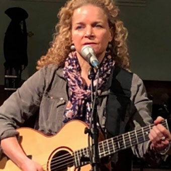
Lara Herscovitch is a modern American songwriter-poet-performer gem, creating masterful contemporary folk with blues, pop and jazz influences. Former Connecticut State Troubadour, she writes, sings and leads with authenticity, integrity, humor and heart, delivering performances that inspire, inform, uplift and entertain. Sound Waves Magazine described her music as "expertly written prose… songwriting at its best… good for your ears AND your soul." Delivered with a voice Performer Magazine called "clear and smooth like expensive liquor," Acoustic Live in New York City added, "She possesses not only a huge reservoir of musical talent and a voice with a bell-like clarity, but a keen sense of global concern and a fierce intellect... It might seem too good to be true, but true it is."
May 17, 2019
Andrew Finn Magill
Raised in an Irish musical household in Asheville, North Carolina Andrew "Finn the Fiddler" Magill grew up studying with many of the world's best traditional American and Irish fiddlers at The Swannanoa Gathering music workshops. At age 18, his debut album Drive & Lift was featured multiple times on NPR and his 2016 two-disc project Roots and Branches debuted at #46 on the Folk DJ charts. Says grammy-winner Americana artist Tim O'Brien: "He has learned from and now plays with the best in the genre. On Branches you can hear a new musical voice emerging. I'm gonna keep listening for Finn Magill."
Finn has built his career on Irish music having performed with John Doyle, Liz Carroll, the Paul McKenna Band, and Martin Hayes among many other Irish luminaries.
In 2014 Finn moved to Rio de Janeiro and plunged head on into Brazilian choro music, studying with some of the most accomplished in the genre including Luís Barcelos, Nicolas Krassik and Pedro Paes. Since then, he has spearheaded several Brazilian projects including choro quartet O Finno, Violino no Choro, and Brazilian Strings Trio a trio with fellow American violinist Ted Falcon and Brazilian guitarist Nando Duarte. In April 2018 the trio released their debut album followed by a sold-out two-week tour along the West coast.
In 2018 Finn also released Canta, Violino! on Ropeadope Records, the product of years of study and performance with Rio's diverse musicians. Writes Brazilian percussion legend Airto Moreira of Chick Corea and Miles Davis:
"Its nice to see fresh, young musicians carrying on the traditions of Brazilian music. Finn Magill displays a love and authenticity that can fool you into thinking he is from Brazil. His style is playful and light, yet soulful and passionate. Congratulations!"
Magill merges his folk background and more than fifteen years of jazz study with the Brazilian musical language he has spent the last three years studying, all on an instrument seldom associated with Brazilian music: the violin. The result is uncharted territory for both the violin and Brazilian music.
April 19, 2019
Carl Beverly
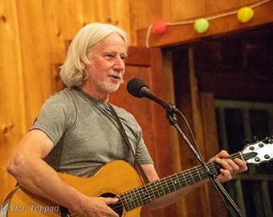
Carl Beverly
Carl Beverly is a songwriter from Warner, New Hampshire who recently completed his solo CD “Ordinary Life.” He has been writing and perfecting his distinctive finger picking style for the past ten years. His songs reflect the sorrow and joy of life, family, friends, and nature. Beverly's passion for songwriting led him to form the Brook House Songwriters' Circle which provides community and inspiration to other local songwriters. When he's not writing, Beverly is a frequent performer at area coffee houses, open mics.
March 15, 2019
Rob Lutes
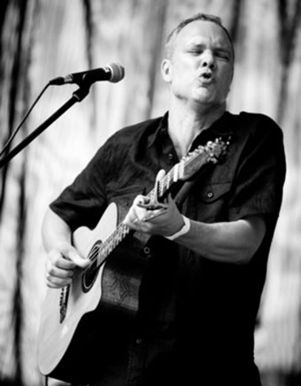
Since the release of his first album Gravity in 2000, Rob Lutes has steadily built a collection of exquisite songs that inhabit the intersection of blues, folk, Americana, and the contemporary singer-songwriter genre. As skilled delivering a Piedmont blues classic as he is performing his own acclaimed original songs, Lutes's masterful fingerstyle guitar work and soulful voice bring an unmistakable intensity to his live performances.
A double Maple Blues Award nominee as Acoustic Act and Songwriter of the Year in 2017, on his seventh album, Walk in the Dark, he does what he has done for years: kicks up a little dust, wades into some deep waters and tackles the realities of the world with depth, humour and a unique musical style.
"Rob Lutes will soon be counted amongst the ranks of the best in the industry. Insightful and meaty… gutty and gritty… A rare talent that keeps getting better with each project released, one listen will prove he is more than a passing fancy; this guy is here to stay." — Matt Large, Montreal Folk Festival
Tonight's Sponsor:
The Andover Elementary/Middle School
February 15, 2019
Dana & Susan Robinson
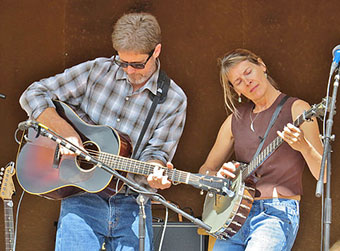
"From Cabot, Vermont – Americana-roots and folk duo, Dana and Susan Robinson combine vivid, songwriting and storytelling, with fiddle tunes, clawhammer banjo, elegant melodies, and rich harmony singing."
Drawing upon experiences of more than twenty years of touring, Dana and Susan craft a performance that conveys the mystery and wonders of their journey. Their unique blend of original songwriting and traditional Appalachian music, bring to their performances a deep understanding of America's musical heritage, and how it relates to our contemporary lives.
"Exquisite music - physical and spiritual, contemporary and ancient, up to its eyeballs in mud and transcendence. Musicians like Dana Robinson don't grow on trees!" — Music Upstream
“Rural America explored with elegant simplicity. Their music and cleanly poetic songwriting bring to mind the great folksingers of our times.” — Asheville Citizen-Times
Tonight's Sponsor:
Andover Energy Group
Curently encouraging weatherization of local homes
January 18, 2019
Kevin Connolly
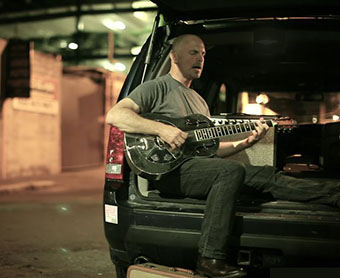
Writing and performing for over twenty years, Kevin Connolly has carved out his own way of writing American songs and earned a reputation as a passionate performer. Connolly has toured extensively in the U.S. and Europe while maintaining a strong presence and tie to his New England roots. Working the college and coffeehouse circuit solo, Kevin has also played major festivals including Newport Folk, SXSW, Kerrville Folk and Bumbershoot. He has opened up for a long list of notable artists including Indigo Girls, Huey Lewis, Todd Rundgren and Joan Osborne. Kevin's songs have also appeared on network television shows and in major motions pictures as well as independent films.
Raised on Boston's South Shore, Kevin comes from a musical family with composer/brother Jim Connolly, a fixture of the West Coast "New Music" scene. Early influences like John Prine, Tom Waits and Bob Dylan remain inspirations and guiding forces. Writing descriptive songs that capture something about regular life in America today has been a running theme and preoccupation.
Tonight's Sponsor:
New Horizons Hair Stylists
170 Main Street, Andover NH
December 21, 2018
Hiroya Tsukamoto
Hiroya is a one-of-a-kind composer, guitarist and singer-songwriter from Kyoto, Japan. He began playing the five-string banjo when he was thirteen, and took up the guitar shortly after.
In 2000, Hiroya received a scholarship to Berklee College of Music and came to the United States. He formed own group in Boston "INTEROCEANICO (inter-oceanic)" which consists of unique musicians from different continents including Latin Grammy Colombian singer Marta Gomez. The group released three acclaimed records ("The Other Side of the World", "Confluencia" and "Where the River Shines"). Hiroya released two solo albums ("Heartland" and "Places") from Japanese record label 333 discs.
Hiroya has been leading concerts internationally including several appearances at Blue Note in New York City with his group and Japanese National Television(NHK). Hiroya performed, recorded and shared stage with Esperanza Spalding, The Kennedys, Joe Jencks(Brother Sun), Michael League (Snarky Puppy), Brooks Williams and Jim Kweskin.
Tonight's Sponsor:
“NINEJULY”
WEBSITES FOR FOLK MUSICIANS
DEDICATED TO SUPPORTING ARTISTS IN THE FOLK MUSIC COMMUNITY
November 16, 2018
Toney Rocks
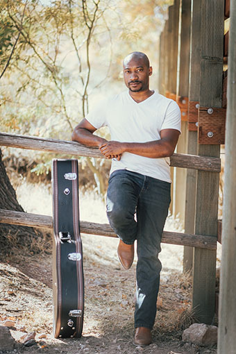
Singer-songwriter, Toney Rocks delivers an intimate concert exploding with diversity featuring his soulful singing supported by acoustic guitars, ukulele and piano. The Las Vegas Weekly recently named Rocks as one of 10 Las Vegas Artists to Watch in 2017. Kathy Forste, Music Director of KC Cafe Radio said, "Toney Rocks voice is cool and sweet, rocking and lyrical. His songs are thoughtful and hummable...". Ray Sang from UK blog IndustryME says, "I was sold as soon as I heard the husky tones of Toney's voice". Toney Rocks songwriting is steeped in folk, blues and rock influences which has led to Toney Rocks sharing the stage as a guest with folk music legend, David Bromberg. In addition to headlining concerts around the U.S., he has opened for artists such as Corey Harris and Jarekus Singleton.
"Toney is the consummate singer-songwriter. His playing is solid, his voice is like velvet, and his song-writing is insightful and clever. " — Bliss Hippy (Folk Alliance 2017)
October 19, 2018
Dan Frechette and Laurel Thomsen
Meeting via a chance YouTube sighting and fueled by a once-in-a-lifetime musical chemistry and friendship, Canadian-American Roots-Folk duo Dan Frechette and Laurel Thomsen are "...prodigious players with songwriting that sets them apart" (Penguin's Eggs, Fall 2016). "Lyrically refreshing and musically diverse", they seamlessly combine emotive, "judicious violin," diverse and "phenomenal guitar playing," compelling storytelling, a dash of harmonica and humor, and unique vocal chemistry with "fascinating undertones and range," for a polished, engaging performance. Instantly memorable and magnetically appealing, months after playing the little towns the duo enjoys discovering, they learn that residents are still talking about what a great night everyone had.
"Beautiful rapport...judicious violin...Frechette and Thomsen maintain absolute harmony while jumping from genre to genre...fascinating undertones and range...phenomenal guitar playing...prodigious players (with) songwriting that sets them apart." — Penguins Eggs Magazine
Tonight's Sponsor:
The Andover Hub
at 157 Main Street
The former town hall
that has been re-purposed as a community center
September 21, 2018
Jamie Kallestad
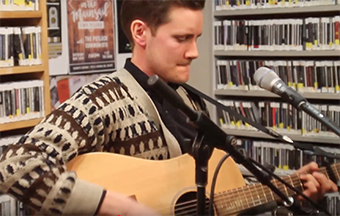
Jamie Kallestad is a songwriter from Cloquet, MN. A longtime guitarist and vocalist for the MN stomp-grass trio Saint Anyway, he is also one half of the New England Americana duo 90-Mile Portage. Jamie currently lives in Boston, MA. His new full length album Songs From The North Country was inspired by three months in Norway. In 2017, Jamie was selected to serve as an artist-in-residence for Porcupine Mts. Wilderness State Park.
June 15, 2018
Floyds Row
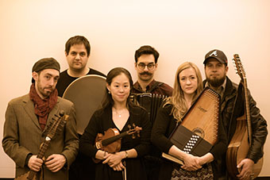
A British-American ensemble formed in Oxford (UK), roots revival band Floyds Row explores early, folk, and classical idioms on an array of modern and period instruments. Fusing a variety of styles, Floyds Row repertoire includes both original material and pieces pulled from the early British folk tradition and English Renaissance.
"A mix of Purcell and Bob Dylan played on various instruments, including an accordion and a viola da gamba. Kinda crazy, but it works." David Rabin, WPFW Radio
"No two shows are alike, but the performances guarantee an eclectic mix of traditional pieces from composers of the sixteenth and seventeenth centuries, covers from modern folk singers such as Joan Baez, Bob Dylan, and the Grateful Dead, as well as original compositions that pull from the meld of the traditional and the classical." Dominique Agnew, North Potomac Times
May 18, 2018
Alex Smith
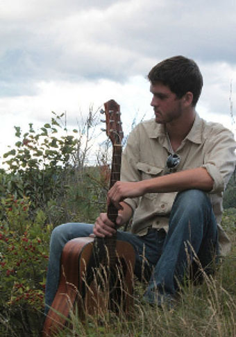
Alex Smith grew up in Long Lake, in the heart of New York's Adirondack Park, and his music strives first and foremost to echo the people of that area. He builds songs from a blend of traditional folk harmony and strikingly modern lyrics, confronting today's most pressing issues with grace while paying homage to the masters who came before him.
"Alex is a wonderful poetic writer who captures words full of meaning, matching them with creative music that creeps quietly into the past at the same time as dancing with the present, and sneaking a peek at the future." - Bob Everhart: Country Music News International
April 20, 2018
Annalise Emerick
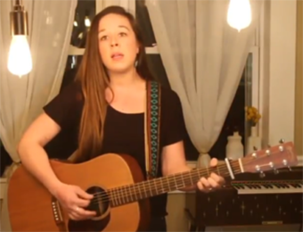
Annalise Emerick, a self-starting, twenty-something, singer-songwriter has been on the road virtually non-stop for six years. Choosing to leave behind any semblance of a normal life for the day-to-day of a traveling independent musician was always a no-brainer for the Nashville spitfire. In 2011, Emerick released her first project, Starry-Eyed, to heavy critical acclaim after it debuted at #9 on the iTunes Singer/Songwriter chart. Three years after the release of her first EP, Emerick returned with Field Notes, a folk-inspired, markedly more mature turn for the singer that demonstrated just how much her endless days on the road and years of hard work fostered her growth as an artist and performer. With Field Notes, Emerick has situated herself among fans of Brandi Carlile, Patty Griffin, and Eva Cassidy alike.
Emerick has toured extensively all over the US, playing 150+ shows every year. In 2015, Emerick won the Wildflower Festival singer/songwriter contest in Richardson, Texas, opened for Gregory Alan Isakov at a sold out show at the Ogden Theatre in Denver, Colorado and completed a European tour. A native of Austin, Texas, Emerick was thrilled to be selected as a 2016 Kerrville New Folk Finalist.
Emerick will be on tour throughout the US and Europe in 2017 and will be releasing, The Right Heart EP, a collection of love songs, on May 5th, 2017.
When she's not on the road, you can find Annalise catching up on her book club reading, hanging out with her husband, and writing new songs at their home in Nashville.
March 16, 2018
Hilton Park
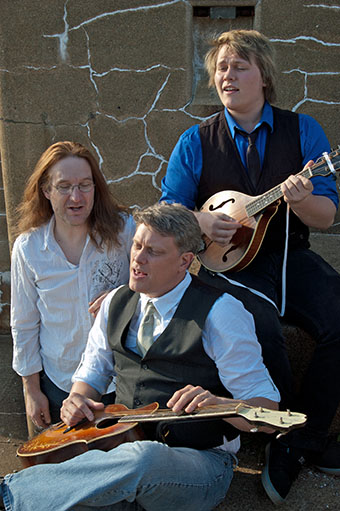
Hilton Park is an Americana/Folk trio made up of a father, son and neighbor from a small town in Southern Maine who started playing music together for their own enjoyment, and within 8 months found themselves being recognized by the New England Music Awards as one of the best acts in New England.
“Hilton Park is about as New England as clam chowder and flour biscuits… rootsy folk that imparts an old time feel in brand new songs. A listener would undoubtedly imagine themself comfortably on an old front porch, right next to this dynamic trio”. — The Third Half (Feb 5, 2016)
Their first and most unexpected accolade came on New Year's Day 2014, when Hilton Park was notified they had been nominated for the 2014 New England Music Award for “Roots Act of the Year”. People had started to take notice of the little trio with the big sound. The band went on to win the 2015 New England Music Award for “Best In State; Maine”, an honor chosen from all genres of music. They've since earned a third and fourth NEMA nomination in 2016 and 2017.
“…A tremendous salad bar for the soul, tastefully rooted in Americana territory. This trio's real talent is making their listeners feel what they were feeling when they were writing these tunes.” — Bill Copeland Music News (Nov 3, 2016)
In 2017, Bruce, Conor and Gregg were asked to write and record a song for the American Foundation for Suicide Prevention. They answered with the single, “Your Life Matters”, which the AFSP has accepted as a gift from the band. Feeling the need to share their message without profit as a motive, they've made the song available to all as a free download at hiltonparkmusic.com. Hilton Park also use their award-winning songwriting skills to compose and record personalized songs for weddings, anniversaries, non-profit organizations, and other events.
“Hilton Park has that one-in-a-million voice you never encounter in person, and the compositional skill to make good on the gift; a stylish salve for modern music.” — Akademia, (June 16, 2017)
Hilton Park's stage show includes up to 10 acoustic instruments between Bruce & Conor, plus Gregg's piano. Six and 12 string guitars, dobro, mandolin, bouzouki, Weissenborn, dulcimer and others make the stage look like an exotic guitar boutique. But it's the band's soaring three part harmonies that capture the audience's breath, and their careful choice of sparse instrumentation creates a soundscape so full that they have been referred to as a “three piece quintet”.
Tonight's Sponsor:
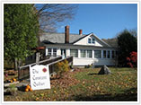
“Constant Quilter
and
Tack Room Consignment Tack
of Andover”
139 Pancake Road, Andover, NH 0321
February 16, 2018
Andrew Merzi
Genuine songwriting, a unique voice and bruising guitar chops are blended together in Merzi's high-energy performance style. After years spent honing his craft in Nashville, Merzi is back performing his original music across New England along with cover songs by popular artists like John Hiatt, Paul Simon and Bob Dylan. After this winter's performance to a sold out crowd at The Flying Goose Brew Pub where he shared calendar space with well known artists such as Tom Rush, Catie Curtis and Patty Larkin, Merzi also performed infront of hundreds at a notable June 2017 performance at Gillette Stadium! Look for his new self produced singles like "Can't Get Enough'' and "World In Motion" from The Merzi Project, where Merzi releases new original music every month. Check out his music page to hear tracks from Merzi's albums "Country Sun" and "Second Hand Tires." Merzi is available to perform in all types of settings, from quiet dining establishments, to corporate settings, or at more upbeat venues with crowds who are looking for a high energy type of performance. Merzi captivates crowds with his clever lyrics and exceptional guitar playing and was clearly born to entertain.
Tonight's Sponsor:
“Blue Mountain Guitar in New London”
A full-service musical retail store providing new and used instruments, accessories, rentals, lessons and repairs,
January 19, 2018
Heather Pierson
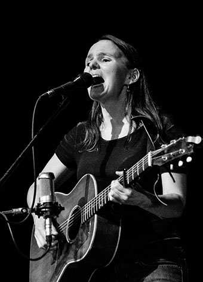
At first glance, Heather Pierson appears to be the girl next door - youthful, friendly, a little bit shy. At the seat of a piano or brandishing an acoustic guitar, however, she transforms into a world-class performer, baring her soul in a manner that leaves her listeners breathless and aching for more.
Heather Pierson is an award-winning pianist, multi-genre singer/songwriter, multi- instrumentalist, arranger, bandleader, and performer. From New Orleans-style jazz and blues to rousing Americana and poignant folk narratives, Heather's memorable, intimate, and cathartic live performances, both solo and with her acoustic trio (Davy Sturtevant on strings/cornet and Shawn Nadeau on bass), feature her virtuosity on piano, her bell-tone vocals, and her commanding yet playful stage presence while wielding a tenor banjo, melodica, ukulele, or acoustic guitar. Her music moves seamlessly and effortlessly from one style to the next, and a growing catalog of wildly divergent CD releases reflects her boundless creativity.
Throughout her colorful career, her eclectic skill set continues to propel her onto concert hall stages and into barrooms, coffeehouses, resort hotels, living rooms, and churches. Her nearly non-stop performance schedule (with over 200 shows a year) speaks of her tireless work ethic and endless devotion to her crafts. Defying genre and classification and yet fully embracing all musical styles, Heather is an artist who speaks the language of music in as many dialects as her abilities will allow. Her life's work, she says, is to share her love of music and of life with others – one song, one heart, one mind at a time.
"Heather Pierson is an amazing talent. Her gorgeous, rich vocals are filled with soul. She can mesmerize you on the piano, the guitar - even the melodica. She's as comfortable and adept with bluegrass as she is with jazz. With Heather, there is absolutely nothing not to like. Don't you dare miss an opportunity to hear her live or to purchase her recordings." -Al Kniola | 88.1 WVPE Public Radio
Tonight's Sponsor:
“Blue Mountain Guitar in New London”
A full-service musical retail store providing new and used instruments, accessories, rentals, lessons and repairs,
December 15, 2017
Wendy Keith and her Alleged Band
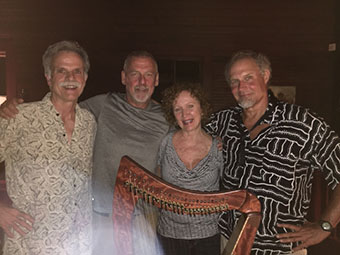
“Folk troubadour and songwriter, Keith has performed in the New England music scene since the '70s and has played on stages from Harvard Square to the Folkway to the Colonial Theatre in Keene. She has opened for Mark Erelli, Jesse Colin Young, and the band America.
After years of playing with the local acoustic band Decatur Creek, Keith has combined her talents with musicians Doug Farrell, Jack Carlton and Walden Whitham of Tattoo and Folksoul. Her sound is an eclectic mixture of instrumentation including guitars, strong harmonious vocals, lap-steel guitar, dobro, bass, sax, clarinet, and penny whistle.” — Monadnack Ledger-Transcript, 8/31/2016
Tonight's Sponsor:
The Bear Hollow Trading Post
&
Naughty Nellie's Ice Cream Bar
in Andover
Whether it's ice cream or boots, it all comes from cows!
November 17, 2017
Rupert Wates
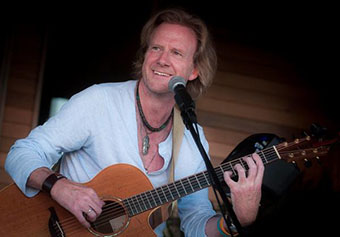
Rupert Wates was born in London and studied at Oxford University. He has been a full time songwriter since the late 1990s, when he signed a publishing contract with Eaton Music Limited. His contract required him to write material in all kinds of styles and genres, for all kinds of artists. He worked extensively with Jazz vocalist Liz Fletcher, and wrote the album 'Blue Afternoons' (Mainstem, 2002) specially for her voice. Moving in 2001 to Paris, Wates formed his own quartet and began playing live regularly. In fall 2006 he came to the US. He is now based in New York City and Colorado.
Since coming to the US, Wates has won more than 30 songwriting awards.
His music is an eclectic mix of acoustic, melodic art/folk, with flavors of jazz, vaudeville and cabaret. He has released seven solo CDs. They have been very well reviewed in the online press and tracks from them have been played on radio all over the world. Wates' songs have been recorded by other artists in the UK, Canada and the US. In 2015, Nashville-based performer Roxie Rogers released Crazy Puzzle, an album of songs from Wates' back catalog
Despite Wates' British background, and underpinning the universality of his music's appeal, Folk and Acoustic Music Exchange has called him "a prime figure in American music'' and goes on: "This is one gifted sonofabitch... If you're not hip to this guy yet you're missing out."
Audiences everywhere respond to Wates' brand of melodic art/folk—haunting songs that ring true.
October 20, 2017
Zak Trojano
Zak Trojano is a songwriter and multi-instrumentalist, a finger-style guitar player, a fly-fisherman, and a beer drinker. He watches more than he talks, the guy at the end of the bar nursing a drink while the afternoon light angles in, letting the conversation pile up around him like snowfall. He grew up in New Hampshire, outside of town in a cabin built by his parents. His father was a drummer who held down a regular country gig, and nights after work he would loosen his tie and show his son the finer points of Ginger Baker and Elvin Jones. In New Hampshire they drove around in trucks, and Prine and Dylan cassettes showed up in most of those trucks. Zak made Eagle Scout, got his knots down. Then it was college and out, wandering the country from the desert Southwest to Great Plains until he ran out of money, washing windows to work up the bus fare home. After a while it seemed like he ought to write some songs, and he did: heavy songs with a light touch; an AM radio throwback voice and an intricate finger-style technique framed by a drummer’s rhythm and sharpened by years of immersion in the work of players as various as John Fahey, Merle Travis, and Chet Atkins. In over a decade writing, recording, and performing music professionally - sharing studios and stages with his band Rusty Belle, or supporting touring acts like Chris Smither, Kris Delmhorst, Jeffrey Foucault, and Peter Mulvey - Zak Trojano has evolved his own thing: a warm baritone paired with an old Martin guitar, floating above spare lines of cello and lap steel, horns and brushes, with a deceptively simple lyricism that on repeated listening shows that the fellow at the end of the bar doesn’t say much, but he’s worth hearing.
Tonight's Sponsor:
Hummingbird Studios of Andover
September 15, 2017
DAVE SHERMAN
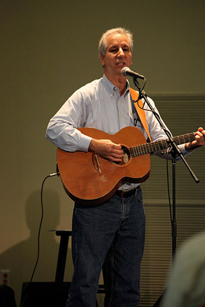
Dave Sherman sings about real life experiences - family, faith, work, winning the Publisher's Clearing House and Duct Tape! Dave walks his audiences through a lifetime of creative writing. He escorts his audiences from Mayberry to see Andy and Barney, to Alaska to witness the Gold Rush and to a hospital corridor to hear a baby girl being born.
Dave's songs include hard-driving blues and laid-back folk tunes. His songs are wrapped around a voice that is as much a part of the Mississippi Delta as cotton fields and paddle wheels. He has shared the stage with such acts as with The Nitty Gritty Dirt Band, Blood Sweat & Tears, Livingston Taylor … and Preston.
Tonight's Sponsor:
Halcyon Poetry Guild
June 16, 2017
DAVEY O.
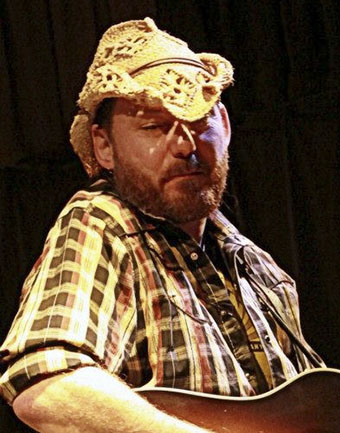
Equal parts songwriter and storyteller, Buffalo's Davey O. has been recognized on a national level for his past two CD releases with multiple honors among the "best of" lists of several Folk & Roots radio stations, and as a 2013 New Folk Finalist at the prestigious Kerrville Folk Festival. Davey has also earned the respect of his peers for his incredible work ethic, performing between 120 - 140 dates per year, and for his constant dedication to the art of song craft. With a journalist's eye for detail and poet's ear for the well-turned observation, Davey O. finds the universal in the particular, turning day-to-day minutiae into dusty paeans to the indomitability of the human spirit. With each tale another slice of life examined.
"Davey O. is a great singer songwriter also, a brilliant and inspired musician...." – Remo Ricaldone, American Roots DJ, Italy
FOLK WORLD:Countrified folk is the general territory navigated by Davey O.'s slow and deliberate manner in conveying his stories via song. But he is capable of revving it up as well, especially in a bonus cut, recorded live. Hearts worn on sleeves, well put together singer songwriter material, etc… There are all the good things here you want and this is the type of act I would enjoy on stage as he clearly has something to say and can musically express it well. – David Hintz
"In Testing For Rust, I am impressed with Davey O.'s power to create mental pictures in the listener's mind ...he is a talented songwriter ." - Mike Penard, ISA Radio, France
Tonight's Sponsor:
“Tilton Medical Associates”
In downtown Tilton
May 19, 2017
HOLLY FURLONE
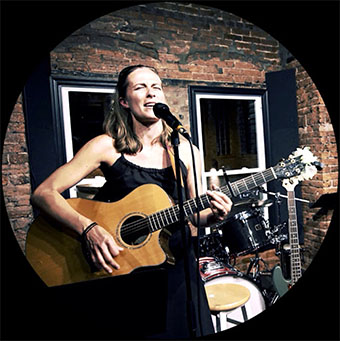
A NH seacoast native recently hailed by the Concord Monitor as a "local rising star" and whose solo performances have been described as 'passionate, candid & pure,' indie-folk singer/songwriter Holly Furlone is excited to take the Andover Coffeehouse stage on Friday, May 19th. (Holly is also a member of the fun-lovin' folk/rock trio, The Midweeklings--with Raf Puga and Jim Tyrrell.)
"I'm a mom. I'm an educator. I'm a student. I make music. I am the luckiest person I know!"~Holly Furlone
Tonight's Sponsor:
Kathy Lowe
“Singer, Songwriter, Music Therapist, Sound Healer, Drum Circler, and Photographer”
April 21, 2017
JORDAN TIRRELL-WYSOCKI
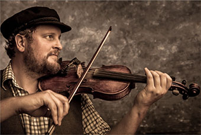
Bringing fresh energy to traditional Celtic music, Jordan was first recognized as part of New Hampshire’s musical culture at the age of 12, when he was the youngest member of the delegation representing the state in Washington, D.C. for The Smithsonian Folklife Festival. He grew up on a combination of contra dances and Celtic music, releasing multiple recordings and performing regularly around the state until leaving for college in Middlebury, VT. After graduating, Jordan spent time in both New York City and Ireland, exploring musical possibilities and honing his craft. He then began to carve out a career for himself back home in NH, touring with multiple rock bands while continuing to develop his unique approach to traditional Celtic music.
With various groups, he has opened for Irish music legends Tommy Makem, Derek Warfield and the Young Wolfetones, country superstars such as Willie Nelson, Charlie Daniels and Uncle Kracker, and classic rockers Blues Traveler, The Marshall Tucker Band and Little Feat. He has toured nationally with the Adam Ezra Group (winner of five New England Music Awards including "Band of The Year") and appeared as a guest musician with other nationally touring bands including The Mallett Brothers, Yarn, The Lost Trailers, Roots of Creation and Hot Day At The Zoo.
Jordan performs more than 200 shows a year with various bands at venues of all sizes, mostly in the Northeast.
Tonight's Sponsor:
Weapons-Grade Communications Collective
"Operating under the radar since 1993"
March 17, 2017
ALEX NAVARRO
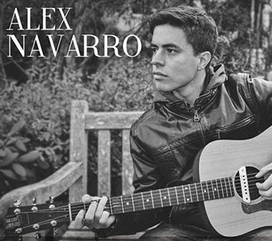
2015 was, in many ways, a year much like any other for Alex Navarro. He spent his days on the streets of Boston, busking alone, with a pile of CD's and a tip cup. His nights were spent in class at Boston College, and his weekends at the acclaimed "Dirt Floor" studio in Connecticut, grinding away on his second album (Due for release Fall 2016), with producer Eric Lichter. In other ways, it was not. "Pardon My Eyes", an album with a low profile release, in a relatively low profile city, began to make itself heard. The title track off the record received a semi-finalist nomination for song of year from the International Songwriting Competition, a contest judged by the likes of Tom Waits, Bill Withers, and Lorde. In Boston, Navarro assembled a band of seasoned professionals, cultivated his live show, and prepared for his 2016 debut show at Paramount Theater. As acclaim for the album and live show continues to spread, and 2016 sees the release of Navarro's sophomore record, It is only a matter of time before he hits the road for the first East Coast tour of his young career.
Tonight's Sponsor:
Ragged View Farm
Offering horse-drawn sleigh rides and maple syrup, right here in Andover
February 17, 2017
TOM PIROZZOLI
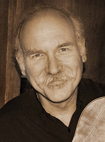
The joy, discoveries and challenges of music, art, and travel have guided Tom's rich life to a quiet place beneath Mt. Sunapee in New Hampshire. His musical path has been long - a 40 year career filled with eight studio albums, numerous songwriting credits, and collaborations with other musicians such as Willy Porter and David Wilcox.
Back in the beginning, as a 19 year-old self-taught guitarist, Tom busked on street corners, performed at anti-war rallies, eventually finding his way into the New England coffeehouse scene. It was the sense of endless possibility and adventure of the 1970s that lead to travels - first through Europe and South America, then to India and Southeast Asia. Later journeys brought Tom to China and Tibet. Encounters with an array of distant people, cultures and ideas both inspired and enriched Tom's music and lyrics.
Playing guitar and electric violin in the early 1980s while writing and performing original music, Tom embarked on a solo career. His self-titled first disc, Tom Pirozzoli, released in 1983, was followed by Ashiata and the Owl (1985) and Eyes and Footprints (1987),. It was during this time that Tom's music was included on Fast Folk Music recordings which are now part of the Smithsonian's collection. Tom was named a winner in MUSICIAN magazine's 1988 Best Unsigned Band Contest, resulting in the national release of "On The Railroad" by Warner Bros. Records. The following year Tom recorded Travels which was picked up by INVASION Records and nationally released, landing in the AAA Charts top 40 albums for 13 weeks. Throughout the '90s Tom toured extensively - opening for artists such as Greg Brown, Jesse Winchester, and Doc Watson. At the same time, Tom began performing and collaborating with Milwaukee-based guitarist Willy Porter, co-writing many songs that have been featured on Porter's albums, including "Try to Forget" on Willy's 2015 release, Human Kindness.
Over the past ten years, Tom has composed instrumental music for the Putnam-Pirozzoli guitar duo. He and Gerry perform a unique combination of jazz, classical and pop which may be heard on their two releases. In his most recent venture, Tom has paired up with highly accomplished multi-instrumentalist and vocalist Kit Creeger.
Tonight's Sponsor:

Tarte Cafe & Bakery
46 Main Street, Andover
January 20, 2017
THE BOMBADILS
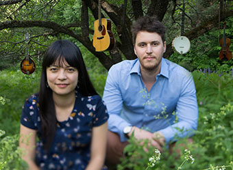
Canadian maritimer Luke Fraser and prairie-girl Sarah Frank share a love of folk songs and fiddle tunes. Drawing from the Canadian, American, and Celtic traditions, the two pour the spirit of story-telling and kitchen parties into their own writing. Luke brings guitar, mandolin and home-grown east coast vocals in harmony with Sarah's singing, lyrical fiddle playing and claw-hammer banjo.
Luke and Sarah grew up listening to The Beatles and Beethoven on cassette tapes (often re-wound with a chewed up pen) and both trained classically at McGill University in Montreal, QC. They released their first album, "Fill Your Boots!" (2012) and in the years to follow, went on tour throughout Canada, the US, Australia, New Zealand, and Europe. In 2015 they released their second album, "Grassy Roads, Wandering Feet," and performed at folk festivals across North America, sharing stages with acts including The Duhks, David Francey, Bruce Molsky, and De Temps Antan. They've performed official showcases at several folk music conferences and were artists in residence at The Banff Centre in 2014, as well as Canadian participants at Ethno Sweden (2014), a folk music exchange between 90 musicians from 15 countries.
Luke and Sarah perform as The Bombadils in a variety of formations including as a duo, or in larger settings with instrumentalists such as Kaitlyn Raitz (cello) and Spencer Murray (flute).
Tonight's Sponsor:
Tarte Cafe & Bakery
46 Main Street, Andover
December 16, 2016
THE LOWE PROFILES
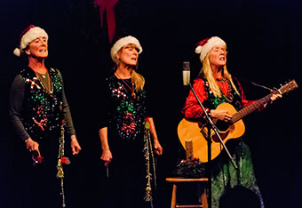
Three sisters will sing their seasonal songs of celebration at the Andover Coffeehouse.
Kathy Lowe, Susie Lowe-Stockwell, and Kim Lowe-Beaton have been singing together since they were young children together, raised in Sutton. In this performance you will hear original holiday songs composed by Kathy and some by Uncle Tom Lowe. The sisters, coming from a Vaudeville/Circus family, have a flair for the stage.
Tonight's Sponsor:
Tarte Cafe & Bakery
46 Main Street, Andover
November 18, 2016
SFERES & WHITE
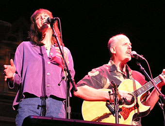
Jimmy Sferes and Jennifer White have discovered an uncommon synergy, blending clear and luscious harmonies with complex and imaginative guitar playing. Their fun and engaging live performances feature an eclectic and soulful combination of blues, roots and rock. Their song "Small Stuff" won an Honor Award in the Great American Song Contest, and they have appeared on Garrison Keillor's "Prairie Home Companion" radio program as well as the Hallmark Channel's New Morning TV show. Derek Blackmon from Indie-Music.com says that Sferes & White have, "vocal harmonies that work so well together it sounds almost too good to be true." There latest collaborative project was to produce the closing song and instrumental soundtrack for the soon to be released modern western "Out of the Wild."
White grew up in a musical family but was a relative late bloomer to the professional music scene. Her first studio effort for the Narrow Gauge Band was produced by Doug Haywood (bass player and background vocalist for Jackson Browne); she has also performed in acapella groups and country rock bands. Sferes played his first guitar at thirteen and during his diverse music and recording career has opened for the likes of David Wilcox, Delbert McClinton, Blues Traveler, Larry Coryell, Richard Elliott, and America.
Tonight's Sponsor:
Ragged View Farm
October 21, 2016
MINK HILLS BAND
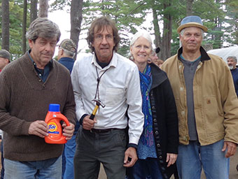
The Mink Hills Band is a New Hampshire based acoustic band whose selection of music includes Bluegrass, Swing, Folk, and Original compositions. The stylistic range of material provides for an interesting and varied musical experience.
Taking their name from the beautiful and remote Mink Hills of the Sunapee region, the group has been playing throughout northern New England for over twenty years. They have appeared at the Portsmouth NH Folk Festival, League of NH Craftsman fair, as well as many Summer concert series.
The group composed and played music for the documentary movie- Gordon Manning: the Sawyer of Sutton Mills and they have recently released their new CD, "Weary Travelers Plea" that features many originals.
Tonight's Sponsor:
Merrimac Corportate Finance, Inc.
September 16, 2016
THE BUSKERS
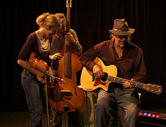
The Buskers
Paul Hubert, Craig Jaster, Kathy KZ Sommer
"The inventiveness of jazz,
the simplicity and directness of folk music,
And the energy of a roots rock house party."
With a kitchen sink of instruments and a repertoire of influences from jug band and jazz to roots rock, The Buskers tap the street music tradition for which they are named, then go far beyond, with serious musicianship, a sense of humor, and energy to burn.
Refreshingly original songwriters and seasoned, engaging performers, The Buskers have befriended audiences at opera houses and folk festivals, house concerts, bandstands, cafes and farmers' markets across New England since 1993. The trio deftly and joyfully weaves violin, mandolin, guitar, accordion, bass, keyboard, banjo, harmonica and tambourine into their arrangements and somehow fitting all their instruments comfortably onstage in even the smallest venue and sometimes they will include a drummer. Their influences range equally as wide as their instrumentation, but their sound is always defined by a shared respect for the crafts of songwriting and arranging and their shared love of the inventive possibilities of improvisation.
Tonight's Sponsor:
Residents at Ragged Mt. Fish & Game Club
August 19, 2016
THE FONDTONES
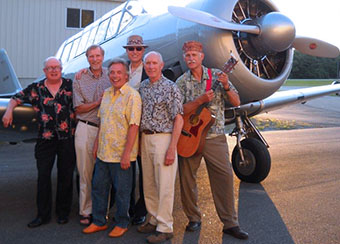
Find out more at: Fondtones.com
The Fondtones Band sings 50's 60's and early 70's songs of the Doo Wop era. This group of 6 musicians is located in the New London, NH area. Members are Ray Heath, drums, Tim Wildman, stand up keyboard/horn; Charlie Freiberg , guitar, Greg Gutgsell vocals, George West, vocals, John Schlosser, vocals, guitar.
The Fondtones have played at Bandstand events in local communities, weddings, small and large gatherings in NH and Mass. since 1990.
To contact the Fondtones Band: call 603-526-6772, or email jschloss@tds.net
Tonight's Sponsors:
Pine Hill Yoga
&
Kayak Country Paddlesports
JULY 15, 2016
MO' COMBO

Based out of the Dartmouth/Lake Sunapee region, or "Upper Valley" of NH, Mo'Combo has evolved from various combinations over the past couple of years into it's present funky form. The chemistry between these players borders on mystical. See one of their shows and you'll see - and hear - musical communication on a higher plane. And with some 120 years of combined stage experience, that means one thing for the audience: groovin'! You'll get tight percolating rhythms, tasteful instrumental interplay, improvisational journeys and three accomplished vocalists - each distinctive, each with their turn to shine, and other times all three pouring their hearts into irresistible, soulful harmonies. You'll hear some unique (and always seriously funky) takes on a surprising assortment of tunes. Mo'Combo is equally adept at driving rythms and hip-grinding ballads, and will satisfy both the audiophiles with musical intricacies and subtleties, and the casual listener with a rhythm section that jumps right into your pocket and stays there long after the last note is played. Mo'Combo is, in two words: simply grooving'.
Will Michaels Guitar, vocals Pickin' from the tender age of ten, and with roots touring the east coast full time, most notably with Sam Vine, and Dario's Show Band, Will settled in Lebanon NH several years ago. He shared his solo talents around the upper valley with finger-pickin' acoustic blues and soulful vocals for a time and is now back in the band scene throwing subtle and tasteful voicings in between his soaring leads.
Scott Sanborn Keyboard, vocals Scott lives in Orange, NH, and has performed locally since the late 1980's, including with favorites Surreal McCoy and SmackDaddy. He has also recorded and performed with the critically acclaimed Ports-mouth NH based Lolita's Bliss. Powerful and versatile vocally, he draws from a background in widely varied genres to pour his soul into the "88's" whether covering a funky horn riff, grinding out howlin' B3 tones, taking a synth solo to new heights or tickling out the blues.
Skip Truman Bass guitar, vocals A local legend in his own right, from Hanover NH, Skip played and recorded with Tracks, whose early 1970's album retains a cult following still, and with the Davis Brothers Band. He has more recently plied his trade with bluesmaster Johnny B. & the Goodes. He has shared the stage with the likes of the James Gang and Canned Heat. Ever the groove-master on the bass, he also lays out a smooth, sweet tenor to send shivers down your spine.
Dana Flewelling Percussion A true "A-list" drummer, from Newbury, NH Dana's musical career spans over 30 years from local legends of the 1980's Great Legs and Night Kitchen, to more recently, R&B favorites like the Squids. Whether the tune calls for tight, "in the pocket" grooves, or rippin' the skins, "the percolator" is always right there for ya —
Find out more at: MoComboBand.com
Tonight's Sponsor:
The Andover Beacon
Our Hometown Newspaper
JUNE 17, 2016
AUDREY AND CLAYTON
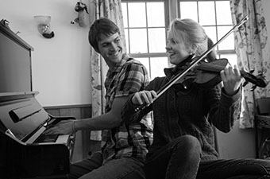
Find out more at: AudreyAndClayton.com
New England duo Audrey Budington and Clayton Clemetson perform spirited yet heartfelt genre-defying original compositions on fiddle and piano. Whether contemplative melodies that conjure up images, spunky innovations that inspire groove, or a slick lick adroitly mastered, a current of idealism and sincerity permeates their music. Audrey and Clayton's passion for traditional New England, Irish, Cape Breton and Scottish dance music, sprinkled with their flair, is astutely expressed in their rousing performance.
Tonight's Sponsor:
New Horizons Hair Stylists
170 Main Street, Andover NH
MAY 20, 2016
JOEL CAGE
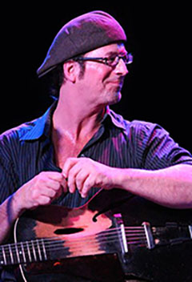
Joel Cage
A virtuoso guitarist and an impassioned vocalist, Joel Cage's music is both evocative and raucous. He spans the gamut from sounding like a full rock band to 'hear your own heartbeat' intimacy.
Joel Cage is also a master interpreter of other people's music, spanning a wide field of musical genres, garnering him the oft used moniker "Acoustic Rock Song Stylist."
Joel Cage currently has 5 CDs in release.
Find out more at: JoelCage.com
Tonight's Sponsor:
Boynton Law Office
164 Main Street, PO Box 395 Andover, NH 03216-0395
APRIL 15, 2016
MARY MAGUIRE
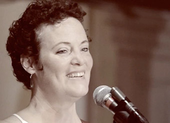
Blizzards and flat tires notwithstanding, the magic carpet ride of performing musicians has lifted Mary's voice across the airwaves from Los Angeles to Boston, from France to Russia and China, and has floated her onto stages shared with the talented likes of John Sebastian, Tom Rush, Livingston Taylor, Christine Lavin, Dave Mallett, Billy Novick and Guy Van Duser. Her hand-picked repertoire includes swing, bluegrass, and contemporary folk, including several well-received originals.
Performing as a soloist from Pennsylvania to Maine since age 16, the native Northeasterner was also co-founder and lead alto/guitarist of New England favorites Sweet, Hot & Sassy! Their popular four albums feature some Mary's songs. Her 2003 solo CD, the sultry, jazz-influenced 'Round Midnight, presents clever originals along with well chosen gems from Horace Silver, Jesse Winchester, and Sting. The northeast's major music festivals continue to treat festival goers to Mary Maguire Band performances as well as her vocal and song writing and arranging workshops. Ever-loving sharing the fun, Maguire also teaches students of all ages guitar, piano, and singing.
Tonight's Sponsor:
Ragged View Farm
MARCH 18, 2016
ANDREA PAQUIN
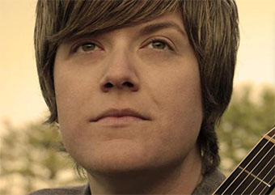
Andrea Paquin's music embodies the term "Folk Rock". Her songs tell vivid stories using clever, memorable melodies and harmonies along with captivating lyrics. And her sound has been compared to that of The Indigo Girls, Melissa Etheridge, Tracy Chapman, and Joni Mitchell. Nathalie Levey of the Northeast Performer Magazine says "Paquin tugs at the heartstrings of her listeners and the rich, cozy humility of her voice goes down like red wine over good conversation."
Find out more at: andreapaquin.com
Tonight's Sponsor:
Lake Sunapee Bank
FEBRUARY 19, 2016
CSC RIFFED
A CAPPELLA, HARMONIOUS, and VERY, VERY COOL
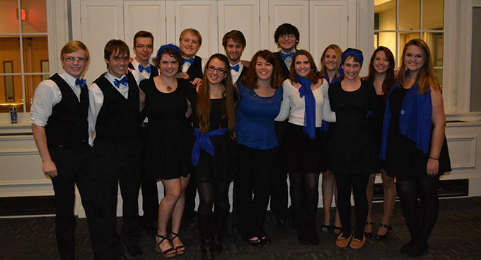
CSC Riffed is Colby-Sawyer's first a cappella group and the college's only student run musical program. Since its conception three years ago, its members have been making music with their mouths for a variety of audiences. With a passion for rehashing contemporary hits and classic favorites alike, Riffed is always ready to perform and is excited to continue growing in the future.
Tonight's Sponsor:
Fenton's Construction, Inc.
JANUARY 15, 2016
THE DOBROS
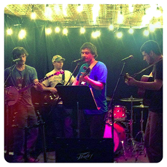
The DoBros have been playing numerous performances throughout NH, MA, and VT including venues such as:
- June Jam 2015 - Musterfield Farm in Sutton
- Penuche's of Concord
- Concord Market Days 2014-2015
- True Brew Barista - Concord
- MainStreet Warner Stage, Warner, NH
- Warner Fall Foliage Festival 2014-2015
- The Monkey House, Winooski, VT
- Littleton Craft Beer Festival, Littleton NH
- Hanover Farmers Market, Hanover NH
- ZuZu, Cambridge, MA
The DoBros started in early 2013 as a response to a lack of foot-stomping going on in town. They got their major debut at the 66th annual Warner Fall Foliage Festival, headlining Saturday night on the newly constructed post and beam MainStreet Warner Stage. What a night! The train kept on rollin' as the DoBros were asked to stomp and smash at a Harvest Party in Essex, MA. And that they did. They were falling off haywagons and spinning fire under the moonlight midnight.
The band performs both acoustic folk/bluegrass sets, as well as electric rock sets that incorperate a diverse mix of covers, with new original material. The DoBros are deeply rooted in improvisation, making each show a unique experience. They mix and bend Blues, Folk, Bluegrass, Rhythm, Funk, Roots, Rock, Reggae, Americana, Fusion, Disco, Motown, Jazz, Calypso, and Psychedelia into a style of music all it's own; Farm-Funk. Music for the common-folk.
The band has yet to record a studio album, but has a solid base of original material which it performs at every show.
Find out more at: TheDoBrosNH
Tonight's concert is sponsored by an Anonymous donor!
DECEMBER 18, 2015
KATHY LOWE & THE LOWE PROFILES
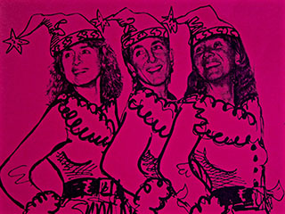
The Lowe Profiles: Kathy Lowe, Kim Lowe-Beaton, and Susie Lowe-Stockwell, will perform in a sister trio of original seasonal carols by Kathy. The CD, "Wishing You Peace," will be available Friday night. Given the girl‘s Vaudeville background, their presentation will prove to be quite entertaining, as they sparkle in sequins.
Find out more at: www.kathylowemusic.com
Tonight's Sponsor:
The Highland Lake Apple Farm of East Andover
NOVEMBER 20, 2015
JULIE SNOW
Find out more at: www.juliesnowsongs.com
Julie Snow began her song writing career in the eighties and was first recorded by Lui Collins. Julie's song, "Baptism of Fire" was the title cut on Lui's second album, and she recorded five of Julie's songs on her first three albums. Although Julie took time off to raise her children and focus on her career in college mental health, she began writing again in the early nineties, and she hasn't stopped since. On November 20, come hear a selection of songs from her own cd and new songs she plans to record this year!
Tonight's Sponsor:
In Honor of the Northern Rail Trail
October 16, 2015
NEWFOUND GRASS
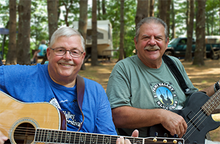
Craig Engel (Guitar) and Steve Abdu (Bass) have been playing music together now for 6 years when Craig joined NewFound Grass ( www.newfoundgrass.com). Their musical backgrounds are long and varied and that experience contributes to the unique sound and harmonies they produce. While mainly Bluegrass inspired, their musical choices are not restricted to Bluegrass. They are looking forward to their October performance at the Andover Coffee House.
NewFound Grass is a quartet but Craig and Steve also often play as a duo and can be found at many of the Open Mics held around the Central New Hampshire music scene.
Craig and Steve along with their wives, Gina and Bette also produce The Pemi Valley Bluegrass Festival, New Hampshire's premier Bluegrass event. (www.pemivalleybluegrass.com). This Festival is held annually during the first weekend in August at the Sugar Shack Campground in Thornton, NH.
Find out more at: www.newfoundgrass.com
Tonight's Sponsor:
Longtail Publishing -- The Home of the Good Doctor Jack
September 18, 2015
NEPTUNES CAR
Neptune’s Car (Holly Hanson and Steve Hayes) is an acoustic duo from Massachusetts and New Hampshire who play original, Contemporary Folk music.
The duo recently released their third album, The 45th Parallel. The album was the #2 album on the Folk charts for February 2015 with two songs tied with each other at the #5 spot, and the song “Fly Fishing the Big Hole” was honored with an Outstanding Achievement in Songwriting in the Folk/Americana category from The Great American Song Contest.
Find out more at: www.neptunescar.com
Tonight's Sponsor:
Proctor Academy
August 21, 2015
SCOTT KING
Scott King is one of the most inventive and compelling independent performing songwriters you'll ever come across. In addition to having a delightfully eclectic sound that sets him apart from most of what's heard on mainstream radio -- and one heck of a powerful voice to boot -- King is also one of the finest acoustic guitar players around, with exceptional fretwork reminiscent of Bruce Cockburn and Brooks Williams. Boston's Metronome Magazine writes of King's "finger-picking magic," while the Kennebec Journal describes King's style as "articulate, compelling, and sparkling." Rounder Records recording artist Nerissa Nields dubs King "a tremendous guitarist: clear, tender, and fresh. To be sure, a Scott King concert is a real treat for guitar lovers, but this "pop-oriented singer-songwriter who is conversant in Revolver-era Beatles" (New England Music Scrapbook) will also blow you away with one richly melodic, unforgettable song after another.
Critics and listeners alike rave about King's songs, which are "instantly accessible," and "comfortable," as if King breathes air in and music out." (Northeast in Tune Magazine). King infuses all his songs with "plenty of hooks," and "really knows how to write those passages that stick in your head" (SoundCheck Magazine)
Scott King began his career in the early 1990's as a solo acoustic performer in venues throughout New England and later in Europe where he performed in roadside cafes, schools, churches, theaters, and festivals. A grueling gig schedule of 5-8 shows a week between 1993 and 1994 taught King something about being a professional musician and prepared him for the next phase of his career in Boston. King entered the city's thriving Folk music scene, and in less than a year, he wound up a semi-finalist in the Boston Acoustic Underground Competition and a finalist in the WADN Riverbank Songwriting Contest.
Find out more at: www.scottrichardking.com
Tonight's Sponsor:
Ragged Mountain Physical Therapy of Andover, NH
July 17, 2015
KENNEY WEILAND
Kenny's solo career spans nearly thirty years, performing throughout the mid-Atlantic states and eastern seaboard. His music is jazz and swing oriented, covering old standards from the 30's and 40's, but is equally comfortable playing blues, folk rock, and contemporary songs by Jamie Cullum, Van Morrison, Ray Charles, Paul Simon, The Beatles, John Prine, and more. His original songs, several of which have been recorded by other artists, are quite diverse. He covers country to swing, latin to americana, retro to jazzy ballads, and sentimental to twisted lounge humor.
A New Hampshire resident since 1997 Kenny is a popular performer throughout the greater Concord area working as a soloist and with other talented musicians. He's a finalist in the New England Songwriting Contest, with the Grand Finale to be held at the Dreamsicle Arts Studio in Suncook, NH.
Find out more at: www.swunk.com.
Tonight's Sponsor:
Dr. M. Jonathan Mishcon,
Tilton Medical Associates
July 3, 2015
THE ANDOVER COMMUNITY ASSOCIATION
and
ANDOVER COMMUNITY COFFEE HOUSE
present
LINDSEY SCHUST & THE RAGGED MT. BAND
This special concert will be on July 3, 2015 from 6:00-7:30 PM in the Andover Elementary/Middle School outdoor amphitheater
LINDSEY SCHUST & THE RAGGED MT. BAND
Lindsey Schust & the Ragged Mt. Band formed in 2011, when they debuted her local hit "Hippie Hill" at the Andover Historical Society Old Time Fair Auction. Now, the group performs throughout in the NH Lakes Region area. They are working on their new single "Country Way" and the accompanying video to come out in September. The band plays original songs written by Lindsey and arranged for the group. They also cover a mixture of traditional Americana, folk, country western, bluegrass and folk rock. The band is made up of friends and family members, all currently living in Andover, NH.
Lindsey Schust- songwriter, arranger, bandleader, keyboards and vocals
Grace Schust- drums, percussion and vocals
Jim Schust- Guitar
Paul Currier- Dobro, fiddle, mandolin, banjo and vocals
Jim Connell- Bass, guitar and vocals
Jesse Schust- percussion
Free outdoor concert at the
Outdoor Amphitheater
in Andover, N.H.
Located beside Andover Town Hall, Routes 4 and 11
*Bring your own chair or blanket.
Summer Cookout Dinner Fare by the Andover Congregational Church
FOOD STARTS AT 5 pm
Sponsored by Andover Pizza Chef
June 19, 2015
DECATUR CREEK
Decatur Creek defined: (Du-ka'-tur Creek) prop. n. A stream flowing through the scenic country hills by county road 39 near Cooperstown, Otsego County, New York where an impressionable youth once lived and never forgot. (reference - "The Hick In Me" by Doug Farrell). Colloquial - an enjoyable acoustic musical experience where the simplicity of the past meets the complexity of the present.
Jack Carlton, Steve Dionne, and Doug Farrell are each accomplished NH musicians, singer/songwriters, and performers who together are - Decatur Creek. They met as solo performers through local NH coffeehouses and open mikes, attracted by each other’s songwriting and musicianship. From their very first practice and first performance together soon after at the Warner Area Farmer's Market in 2012, they realized there was musical chemistry that compelled further exploration. Their diverse styles, backgrounds, and skills complement one another and the group's evolving original acoustic sound will bring a smile to your face, rhythm to your feet, and leave you wanting for more.
Doug and Steve handle most lead vocals, rhythm and lead guitar, with occasional forays on harmonica and percussion. Jack mans the bass, most harmony vocals, some rhythm and lead guitar, plus a touch of electric lap steel, high-string guitar, and dobro. Veteran songwriters Doug and Steve have created most of the band's primarily original repertoire with Jack contributing the rest. Their influences run from roots to Americana, country, singer/songwriter, folk, and rock, always with the focus on the songs. They perform throughout southern and central NH at coffeehouses, farmers markets, restaurants, festivals, and community events, and have been featured on several NH radio stations including WSCS New London, WNHN Concord, WEVO Concord, and soon (May 25th), WSCA Portsmouth. Their self-titled debut recording of 11 original tunes is about to be released and should be available at the concert.
Find them on Facebook here: DecaturCreek
Tonight's Sponsor:
The Highland Lake Inn Bed & Breakfast
Andover, NH
May 15, 2015
SFERES & WHITE
Jimmy Sferes and Jennifer White have discovered an uncommon synergy, blending clear and luscious harmonies with complex and imaginative guitar playing. Their engaging live performances feature an eclectic and soulful combination of blues, roots and rock. Their song “Small Stuff” won an Honor Award in the Great American Song Contest, and they have appeared on Garrison Keillor’s "Prairie Home Companion" radio program as well as the Hallmark Channel’s New Morning TV show. Derek Blackmon from Indie-Music.com says that Sferes & White have, “vocal harmonies that work so well together it sounds almost too good to be true.”
White grew up in a musical family but was a relative late bloomer to the professional music scene. Her first studio effort for the Narrow Gauge Band was produced by Doug Haywood (bass player and background vocalist for Jackson Browne); she has also performed in acapella groups and country rock bands. Sferes played his first guitar at thirteen and during his diverse music and recording career has opened for the likes of David Wilcox, Delbert McClinton, Blues Traveler, Larry Coryell, Richard Elliott, and America.
Read more and listen to music clips here: www.sferesandwhite.com
Tonight's Sponsor:
Belletetes
Building Products Specialists
4 Mill Road
Andover, NH 03216
Phone: 603-735-4134
April 17, 2015
TOM PIROZZOLI
Tom Pirozzoli is a well known, much respected musician throughout New England as well as on the national music scene. "Travels"- his fifth recording spent 13 weeks on the top forty AAA charts and was the featured release at Tower Records in LA and Nashville.
Tom has written songs that have been recorded by artists as varied as Tonto’s Big Idea, Willy Porter, and Pam Prior as well as others. His co- writes with Willy Porter have been performed in Carnegie Hall, at Madison Square Garden and The Royal Albert Hall. Original songs recorded by Tom in the 1980’s with the Fast Folk Music Magazine (New York) are in the Smithsonian collection.
Tom's skills as a performer and singer-songwriter were honored by Musician Magazine as a winner in their "Best Unsigned Band" contest resulting in a national release on Warner Brothers Records.
His current focus is co- writing with Willy Porter, and recently David Wilcox. Willy Porter recorded four co-writes with Tom n his latest CD including the title track "Human Kindness. Tom also writes music for and performs with the Putnam Pirozzoli instrumental guitar duo which is rooted in a broad tradition that uniquely combines jazz, classical and pop for a truly original sound.
Here is a link to an article written about a poem of Tom's
Tonight's Sponsor:
Horizons Engineering, Inc.
176 Newport Road
New London, NH 03257
Telephone: 603.877.0116
March 20, 2015
CLICK HORNING
Click Horning also known as Click - Singer, Guitarist, Composer.
The Lake Sunapee, NH region has always had more than its share of musicians. Maybe it’s the mountain air or maybe it’s the scenery, but something keeps them coming back. Just ask Click Horning, New London’s singer songwriter who left when he was seventeen for the Big Apple. Twelve years, a record contract and an album later it was time to come back. Early influences were Bob Dylan, Gordon Lightfoot, Peter Paul & Mary, as well as rock and roll and R&B that he listened to growing up.
Click’s music has taken him across the country several times, to the Rockies and to the deep south . Click has produced two more solo albums and two albums with his band Night Kitchen , a “get up and dance” band composed of Click on lead vocals and rhythm guitar, Gerry Putnam on lead guitar, Dinty Child on electric rhythm guitar and keyboards, Dana Flewelling on drums and Dave Doran on bass.
Click began playing guitar at boarding school, influenced by other guitar playing students, one in particular being Gram Parsons. Click persuaded his grandmother to finance a bottom-of-the-line Gibson guitar (a combination birthday and Christmas gift). “I had been spending all my spare time practicing on a friends guitar, but soon found I had to have my own.”
He began playing folk songs, but after hearing Gram and writers like Bob Dylan, he decided to try his hand at writing songs. “It was the perfect blending of poems and music that intrigued me. I’ve always loved lyrics that tell a story.”
Tonight's Sponsor:
Jimmy Sferes Professional Guitar Instruction
February 20, 2015
KATHY LOWE
Kathy Lowe is a multi-talented, multi-faceted singer/songwriter and artist. Music for adults, kids, and everyone else (you know who you are!)
From a lineage of circus/vaudeville folks, Kathy shares her retrospective of songwriting from heartfelt depth and humor.
With guitar, dulcimer, and drum, her voice invites us in.
At Highland Lake Grange Hall on the corner of Rte 11 & Chase Hill Road, East Andover, NH. Click here for a Map & Directions.
Doors open at 6:00PM for for light dinner and refreshments provided by the Andover Congregational Church. Sign-ups for open mic also begin at 6:00PM and then the show starts at 7:00PM.
Join us on the 3rd Friday of every month.
The show runs from 7:00PM until 9:30PM. Open Mic musicians play 2 songs or ten minutes - whichever is shorter.
Admission is free.
Come to play or come to listen. We are a listening room environment. Most of all we are here for the community, so come and be welcome.
We are the New Hampshire Magazine Editor's Pick as the "2015 Best Open Mic Night" in the Granite State.

And find us on facebook

FOR MORE INFO CONTACT LARRY CHASE AT 735-5135 OR LBCHASE@AOL.COM